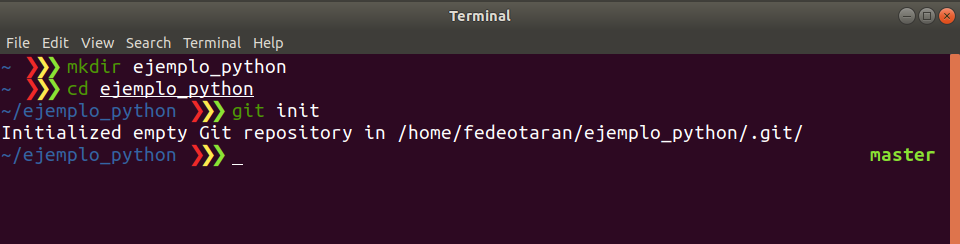
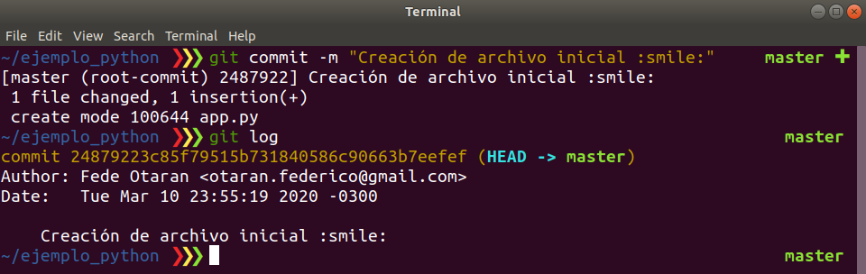
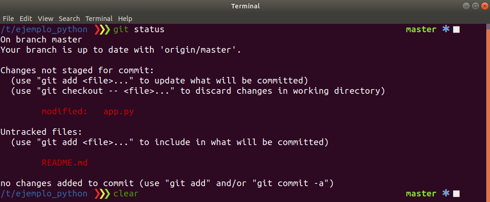

Guía de Git¶
En la explicación práctica hablamos sobre los conceptos de git. Aquí están las diapositivas.
Instalación¶
En Debian-based¶
sudo apt update
sudo apt upgrade
sudo apt install git
En Red Hat-based¶
sudo yum upgrade
sudo yum install git
En MacOS¶
brew install git
En Windows¶
Descargar en instalar de gitforwindows o de
git-scm. Tener en cuenta que en la cátedra
vamos a utilizar GitBash por lo cual deben asegurarse que se instale.
Crear una cuenta de Github¶
Para crear una cuenta tienen que entrar a la web de Github y regitrarse (Sing up).
¿Cómo usar Git?¶
Vamos a ver dos formas para comenzar a trabajar con Git:
- Creando un repositorio desde cero y agregando los archivos iniciales.
- Descargando un proyecto ya creado y modificarlo.
Configurar información en Git¶
En git cuando se va a realizar una operación para generar una nueva versión del código es necesario contar con información de usuario. Por esto es necesario que configuremos lo siguiente:
$ git config --global user.name "John Doe"
$ git config --global user.email johndoe@example.com
Para ver la configuración:
git config --list
Comenzar un repositorio desde cero¶
Con git podemos versionar cualquier directorio/carpeta donde comencemos nuestro proyecto. Por eso en primer lugar lo que vamos a hacer es crear un directorio.
mkdir ejemplo_python
El paso siguiente es moverme dentro del directorio para comenzar a trabajar.
cd ejemplo_python
Ahora vamos a inicializar nuestro directorio como un directorio versionado por
Git.
git init

Podemos ver que se creó en este directorio una carpeta oculta con el nombre
.git/. Esto significa que este directirio está habilitado para ser versionado
con Git. Ya estamos listos para crear nuestro primer archivo.
vi app.py

Guardamos el archivo en el directorio de nuestro proyecto.
Warning
En este caso utilizo el editor de texto vim. Les recomendamos que utilicen otro editor para trabajar como VsCode, Atom, SumblimeText, PyCharm, etc.
Ahora si ejecutamos git status vamos a ver que Git detecto que hay un nuevo
archivo que aún no está versionado en nuestro directorio.

Para agregar este archivo al versionado de Git debemos hacer:
git add app.py
Volvemos a ejecutar el comando git status para ver que información nos da
Git ahora de este archivo.

Para hacer estos cambios efectivos es necesario crear un commit.
git commit -m "Creación de archivo inicial :smile:"
Warning
Si tenemos una instalación nuevo de Git el sistema puede solicitar que configure mi nombre y mi mail para poder agregar esta información en el commit:
Lo que tenemos que hacer es ejecutar los comandos que nos sugiere pero con nuestros datos personales. Esto es simplemente para que queden nuestros datos asociados al commit como autores.
En este momento tenemos el primer commit en nuestro repositorio local.
Podemos ver la lista de todos nuestros commits con el comando git log.

Ahora queremos compartir nuestro código y para esto es necesario subirlo a un
repositorio remoto. Para esto es necesario crear un nuevo repositorio en
Github.
Warning
Tener en cuenta de NO CREAR el archivo README.md como sugiere la guía
ya que va a complicar el subir nuestro código.

Una vez creado el repositorio en Github tenemos que agregar ese repositorio
remoto en nuestro repositorio Git local.
git remote add origin git@github.com:fedeotaran/ejemplo_python.git
Ahora ya estamos listos para subir los commits con nuestros cambios.
git push -u origin master
La salida de comando debería ser parecida a esta:

Ahora nuestro código ya esta subido al repositorio.
Comenzar desde un reposotorio ya creado¶
La sección anterior nos explica como crear un nuevo repositorio de Git, pero
cuando estamos trabajando en equipo es necesario que sólo una persona
realice la creación del repositorio. El resto de los miembros del equipo tiene
que realizar la descarga del repositorio y comenzar a trabajar.
Para esto es necesario usar el comando git clone.
git clone https://github.com/<username>/<reponame>.git
En mi caso para el repositorio que acabo de crear sería:
git clone https://github.com/fedeotaran/ejemplo_python.git
Esto va a generar una nueva carpeta donde descargará el contenido del
repositorio. La carpeta se creará en el directorio en donde estemos parados
a la hora de ejecutar el comando git clone.
¿Comó descargar el repo con otro nombre?
Si queremos que la carpeta que genere sea con otro nombre distinta a la del repositorio hacemos:
git clone https://github.com/fedeotaran/ejemplo_python.git otro_nombre
El repositorio desgargado ya tiene toda la información de Git para comenzar.
No es necesario hacer el git init dado que el repositorio ya creó otra
persona.
Ya estamos listos para comenzar a trabajar o continuar el trabajo. Nos movemos dentro del directorio.
cd ejemplo_python
Vamos a modificar el archivo app.py que generamos anteriormente.
vi app.py

Y ademas vamos a crear un nuevo archivo README.md para agregarle documentación
a nuestro proyecto.
vi README.md

Ahora si ejecutamos git status veremos cuales fueron las modificaciones que
aplicamos a nuestro repositorio local.

Para sumar estos cambios a git ejecutamos git add.
git add .
Info
Recordar que con git add . lo que hacemos es agregar los cambios que
hicimos para todos los archivos
Una vez que tenemos listos el grupo de cambios y queremos versionarlos creamos un nuevo commit.
git commit -m "Modifico app y creación de README para documentación"
Ahora vamos a subir nuestros cambios.
git push origin master

Info
Tener en cuenta que no es necesario subir cada un commit, podemos acumular localmente una serie de commits para luego aplicar los cambios en el servidor
Ahora el servidor ya tiene nuestros nuevos cambios.